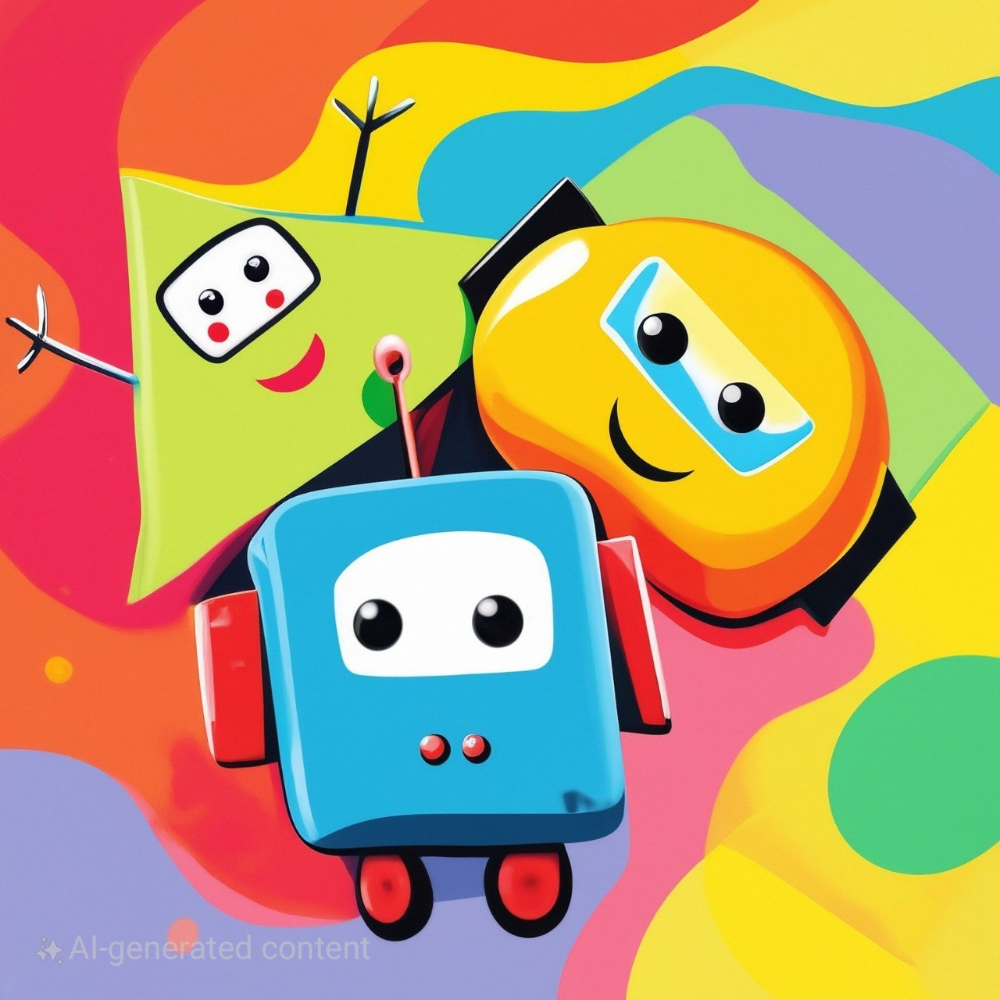
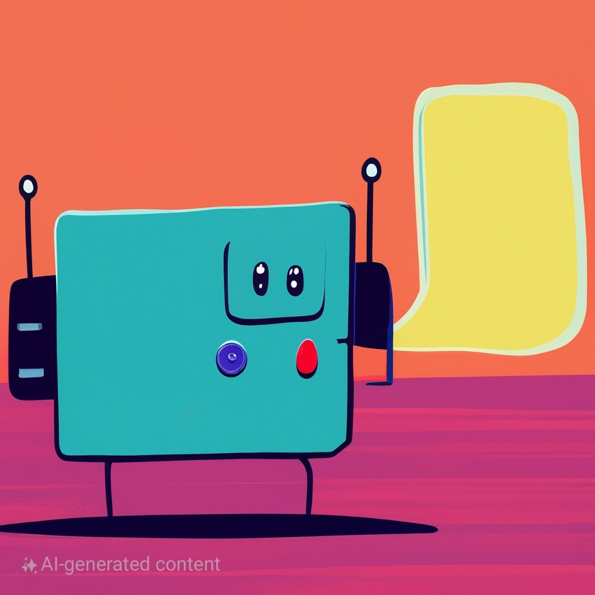
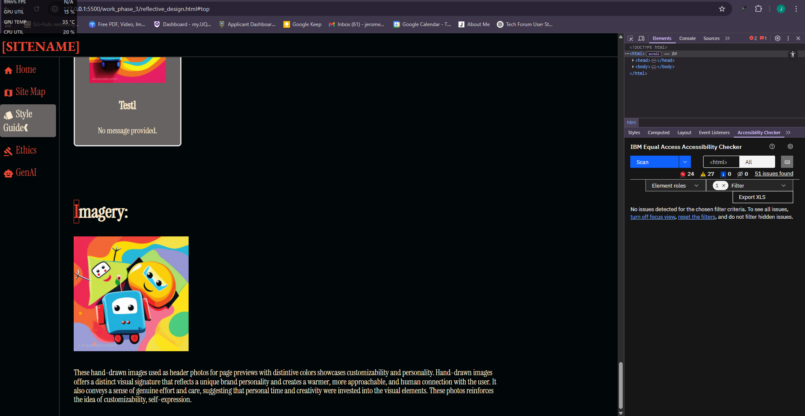

Reflective Design
Value Mapping
Value mapping in a website context is a strategic design and analysis technique used to visually represent the exchange of value between the website (the business or organization behind it) and its users. It aims to understand and optimize how the website delivers value to users and, in return, receives value that supports the website's goals
Value
Design Implications
Components
Social Cohesion
Design features that encourage interaction and connection between users (e.g., discussion boards, event listings). Highlight shared interests and community contributions to foster a sense of unity. Provided opportunities to connect with like-minded individuals, build relationships, and reduce feelings of isolation. Prioritized clear pathways for interaction, such as prominent links to forums or event calendars. Content focused on shared experiences and opportunities for engagement.
Comments and likes of posts
Join topic threads
Empowerment
Provide user-friendly tools for community members to share resources, events, and their perspectives (e.g., easy posting forms for directories, discussion forums). Design for visibility of user-generated content. Fostered a sense of agency and allowed them to contribute meaningfully to the platform. Designed intuitive content creation forms and ensured user-generated content was easily discoverable and valued.
Forum page
User messaging
Non-Commercial Focus
Ensure the design clearly distinguishes between community-beneficial resources/events and any commercial activities (which are prohibited). Focus on providing value and information without promoting sales or advertisements.Ensured that the platform remained a trusted source of unbiased information and support. Clearly prioritized community content and avoided any elements that could be perceived as advertising or sales-oriented.
Community moderation on posts
Representation
Visually and editorially showcase the authentic identity of the community, avoiding generalizations or stereotypes. Feature diverse voices and contributions from within the community.Ensured their unique identity was recognized and celebrated. Highlighted diverse individuals and projects within the tech community. Featured a range of perspectives and experiences in the content.
Daily trending showcase
Access to Resources
Design intuitive and searchable resource directories. Organize information logically for easy retrieval. Ensure resources are accessible across different devices.Provided tangible value and supported the community's growth and development. Implemented robust search and filtering functionalities. Categorized resources clearly and ensured they were accessible on mobile devices.
Resource hub
Search bar on every page
Visibility & Influence
Design features that allow community members to share their stories and achievements with a wider audience (within the platform and potentially through controlled external sharing).Provided a platform to gain recognition and potentially influence broader society. Created dedicated sections for showcasing community achievements and stories. Provided easy sharing options.
"Shared Space" to show all post by users
Events page
Learning And Understanding
Present information about the community in a clear and engaging way for the general audience. Highlight the community's contributions and unique aspects.Promoted understanding and broke down potential biases. Designed informative and engaging content that was accessible to a non-technical audience. Used visuals and storytelling to convey information effectively.
Website functions preview section
Usability
Design a clean, intuitive, and easy-to-navigate interface. Conduct user testing to identify and address usability issues. Ensure consistent design patterns.Ensured that everyone could effectively access and utilize the platform's features and content. Prioritized clear navigation, consistent design elements, and user-friendly interactions. Conducted user testing with members of the target audience.
Minimal website that is mostly text based
Action buttons are clearly labelled and Colors are contrasting
Trust & Safety
Implement security measures to protect user data. Establish clear community guidelines and moderation processes. Provide mechanisms for reporting inappropriate content or behavior.Ensured a safe online environment and fostered participation and trust. Clearly communicated community guidelines and moderation policies. Implemented reporting mechanisms and ensured responsible data handling.
Report button on posts
Community Values Page
Value & Relevance
Design features and content that directly address the needs and interests of the target community. Regularly solicit feedback to ensure the platform remains relevant and useful.Ensured continued engagement and impact. Focused content on topics and resources that were important to the tech community. Implemented feedback mechanisms (e.g., surveys, comment sections).
Topics grouping to filter based on subject
Responsive Design (Mobile-First)
Design the core user experience for mobile devices first, then progressively enhance for larger screens. Ensure seamless adaptation across all devices.Ensured accessibility for users who primarily accessed the internet via mobile devices. Prioritized mobile layout and functionality. Ensured content adapted legibly to smaller screens.
Mobile navigation menus
Dynamic Content
Design user-friendly interfaces for posting and interacting with dynamic content (resources, events, discussions, ratings). Implement robust search, filtering, and sorting options for user-generated content. Plan for content moderation workflows. Allowed users to actively contribute and benefit from shared knowledge and opportunities. Created intuitive forms for submissions, clear display of content, and effective search and filtering tools. Implemented a system for moderating user-generated content to maintain quality and safety.
Search buttons for topics and comments
Display of community members
Projected Identity:
This website projects the identity of a dynamic, informative, and personalized central hub designed for a connected and collaborative community. It serves as a current source of trending discussions and user-contributed knowledge, enhanced by helpful tags for easy discovery.
The platform empowers individual expression through visually distinctive and customizable profiles. Furthermore, it actively fosters real-time interaction and community building through dedicated event listings and direct messaging capabilities, while also providing valuable support and mutual aid via the resource sharing hub. This creates a comprehensive and action-oriented online space.
Emotional Tone:
The emotional tone created is one that is engaging, empowering, interactive, and lively, fostering a strong sense of community connection and belonging. The dynamic and constantly updating content keeps the atmosphere active and stimulating.
Customizable profiles encourage personal expression and ownership within the space. The event page and messaging features promote direct engagement and a sense of presence. The resource sharing hub contributes a feeling of support, helpfulness, and mutual aid. While the black background might introduce a potentially intense or sophisticated visual element, the presence of many colors allows for vibrancy and personalization.
The site aims to feel like a trusted, resourceful, and vibrant online gathering place where members feel seen, heard, supported, and actively connected.
Welcome Message:
"You Belong Here. Welcome!
Join a diverse community where you can share your voice, access valuable resources, and connect with others who share your interests in technology. Discover trending discussions, explore events, find helpful materials, and message fellow members directly. Create your personalized space and become part of our supportive network.""
- "You Belong Here. Welcome!"
This directly addresses the mission of strengthening societal bonds by fostering a sense of belonging and inclusion. It immediately creates a welcoming atmosphere for all, regardless of their background or identity within the community. This aligns strongly with celebrating and supporting unique identities.
- "Join a diverse community..."
This explicitly acknowledges and embraces the diversity within the chosen community, which is a key aspect of the client's mission to support the unique identities of communities across Australia.
- "...where you can share your voice..."
This directly supports the vision of empowering communities to share their stories and enhance their visibility and influence. Providing a platform for individual expression is crucial for this empowerment.
- "...access valuable resources..."
This directly aligns with the vision of empowering communities to access resources that benefit them. The message highlights the practical value the website offers.
- "...and connect with others who share your interests in technology."
This directly addresses the vision of empowering communities to connect with others, thereby strengthening societal bonds within the specific community.
- "Discover trending discussions, explore events, find helpful materials, and message fellow members directly."
This highlights the key functionalities of the website, which are designed to facilitate connection, resource sharing, and engagement – all contributing to CCI's mission and vision.
- "Create your personalized space..."
This acknowledges the importance of individual identity and provides a means for community members to express themselves, aligning with the mission of celebrating and supporting unique identities.
- "...and become part of our supportive network."
This reinforces the idea of community and mutual support, directly contributing to the mission of strengthening societal bonds.
Imagery:



These hand-drawn images used as header photos for page previews with distintive colors showcases customizability and personality. Hand-drawn images offers a distinct visual signature that reflects a unique brand personality and creates a warmer, more approachable, and human connection with the user. It also conveys a sense of genuine effort and care, suggesting that personal time and creativity were invested into the visual elements. These photos reinforces the idea of customizability, self-expression.
Language:
- Aboriginal and Torres Strait Islander Peoples -
Preferred: "Aboriginal and Torres Strait Islander peoples," "First Nations peoples," "First Peoples." When referring to specific groups, use their nation, language group, or community name (e.g., "the Yugara people," "Gumbaynggirr language speakers"). Always capitalize "Aboriginal," "Torres Strait Islander," "First Nations," and "First Peoples."
Avoid: "Aborigine," "Aborigines," "Islander," "Natives," "ATSI," "the Aboriginal community" (unless referring to a specific local community).
- Age Diversity -
Preferred: "Older people," "younger people," "people aged [specific range]," "adults," "children," "teenagers." Be specific when age is relevant.
Avoid: "Elderly," "aged," "seniors" (can be seen as homogenizing), "youth" (can be vague).
- Cultural and Linguistic Diversity -
Preferred: "People from culturally and linguistically diverse backgrounds," "people from diverse cultures," "people with diverse linguistic backgrounds," "multicultural," "Australia's diverse population." Be specific about cultural or linguistic groups when relevant and appropriate.
Avoid: Vague terms like "ethnic," "non-English speaking background" (often inaccurate and deficit-focused). Focus on the richness and diversity.
- Gender and Sexual Diversity -
Preferred: Use gender-neutral language where possible (e.g., "they/them" singular when gender is unknown or irrelevant, "person," "people," "staff," "colleagues"). When referring to specific genders, use "women," "men," "girls," "boys." When discussing sexual orientation, use terms like "lesbian," "gay," "bisexual," "pansexual," "heterosexual." Be mindful of using respectful and accurate terminology for transgender, gender diverse, and intersex people, often using the individual's self-identified terms.
Avoid: Gendered assumptions, unnecessary gendered terms (e.g., "chairman" instead of "chairperson"), outdated or offensive terms related to sexual orientation or gender identity.
- People with Disability -
Preferred: "People with disability," "person with a vision impairment," "person with a psychosocial disability," etc. Use person-first language that focuses on the individual. Be specific about the type of disability only when relevant.
Avoid: "Disabled person," "the disabled," "handicapped,"
"You Belong Here. Welcome!
Join a diverse community where you can share your voice, access valuable resources, and connect with others who share your interests in technology. Discover trending discussions, explore events, find helpful materials, and message fellow members directly. Create your personalized space and become part of our supportive network.""
- Respect -
The language is respectful and avoids assumptions or stereotypes.
- Accuracy -
Accurately describes the platform's purpose and features
- Relevance -
Directly addresses the potential members of the technology-focused community.
- Clarity -
Language is clear, concise, and easy to understand.
- Sensitivity -
No apparent insensitive or discriminatory language were used.
- Person-First Language -
The focus is on the individual ("you," "your").
- Empowerment -
Emphasizes the user's ability to share, connect, and personalize.
Conclusion
The welcome message is welcoming, respectful, empowering, and clearly communicates the value proposition of the community platform without relying on any potentially exclusionary terms or assumptions.
Therefore no changes were made to the message.
User-driven dynamic content:
User-driven dynamic content plays a pivotal and transformative role in a website, shifting it from a static information source to a vibrant, engaging, and evolving platform.
Accessibility:

There were no recommendations based on the current page layout therefore no changes were made
All content on the page adhered to defined accessibility:
- 1.1.1 Non-text content
Users require videos and pictures that enhances learning.
Having alternative text descriptions for these items would enhance accessibility for users with visual impairments who use screen readers.
- 1.4.1 Use of Color -
As there will be much content throughout the website. Colors would be used to differntiate between pages or sections. Having colors will guide navigations and enhance understanding of information.
- 1.4.1 Resize Text -
As many user will be using website on their mobile devices, having the text be scalable would impact the clarity of information.
Allowing users to adjust text size to their needs and ensuring content remains legible regardless of screen size or user preference
- 3.2.4 Consistent Identification -
Having consitent identification will allow all users, especially those with disabilities, to navigate and understand the website